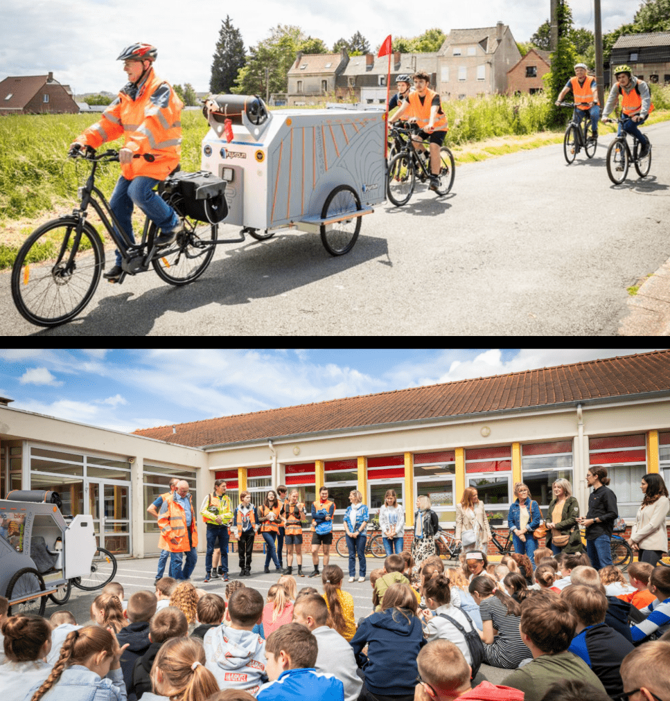

Cette page explique pourquoi le reconditionnement est au cœur de la démarche NIRD. Mais elle n'explique pas comment s'y prendre. Nous proposerons bientôt de la documentation à ce sujet. Et en attendant, rendez-vous sur nos forums Tchap pour en discuter.
Le reconditionnement de PC désigne le processus de remise en état d'ordinateurs non-neufs pour leur donner une seconde vie, tout en garantissant leur bon fonctionnement et leur conformité aux besoins des utilisateurs. En pratique cela consiste à récupérer des ordinateurs usagés (particuliers, entreprises, administrations), effacer toutes les données personnelles pour garantir la confidentialité, nettoyer et réparer les composants matériels (écran, clavier, batterie, etc.), tester et remplacer si nécessaire les pièces défectueuses, réinstaller un système d'exploitation, par exemple Linux, et des logiciels de base.
Le reconditionnement en logiciels libres sous système d'exploitation libre Linux est l'une des actions clés de la démarche NIRD. Cela peut se faire par des adultes de l'établissement. Mais nous encourageons les collèges et lycées à monter des projets de reconditionnement réalisés par les élèves eux-mêmes car cela coche de nombreuses cases de la démarche.
1. Un choix inclusif : un apprentissage actif et valorisant pour tous
Mettre les élèves au cœur du reconditionnement informatique transforme une activité technique en véritable levier pédagogique.
- Apprendre en faisant : en démontant, diagnostiquant, réparant et réinstallant des ordinateurs, puis en formant leurs pairs et même leurs professeurs, les élèves développent des compétences concrètes en informatique, bien au-delà de la simple utilisation d'outils numériques.
- Valoriser tous les profils : le travail en équipe (inventaire, technique, tests, documentation, communication) et le souci de la mixité permettent à chaque élève de contribuer selon ses talents
- Encourager l'autonomie et la confiance : les élèves deviennent acteurs d'un projet concret qui aboutit à un résultat tangible et valorisant : un ordinateur remis en service et utilisable.
- Réduire les inégalités :les ordinateurs reconditionnés sont réutilisés par l'établissement, redistribués à des écoles voisines ou à des familles dans le besoin, ce qui renforce la solidarité.
- Mobiliser la communauté éducative : enseignants, direction, parents, collectivités locales et associations sont impliqués dans le projet, chacun trouvant un rôle et une valeur ajoutée.
Le reconditionnement devient une expérience collective et inclusive, bénéfique à l'ensemble de la communauté scolaire et au-delà.
2. Un choix responsable : former à la citoyenneté numérique et à l'esprit critique
Confier aux élèves la responsabilité du reconditionnement, sous encadrement, est une manière d'enseigner la responsabilité individuelle et collective.
- Développer l'esprit d'équipe et le sens du collectif : chaque reconditionnement nécessite coopération et organisation. Les élèves apprennent à documenter, partager et rendre compte de leur travail de manière structurée.
- Éthique et protection des données : en reconditionnant des ordinateurs, les élèves découvrent l'importance de l'effacement sécurisé des données et du respect de la vie privée.
- Développer l'esprit critique : en manipulant eux-mêmes le matériel et les logiciels, les élèves acquièrent une compréhension technique qui les rend moins dépendants des solutions toutes faites et plus capables de juger la fiabilité et l'intérêt des outils numériques.
- Construire une culture citoyenne : les élèves comprennent que l'informatique ne se résume pas à la consommation de produits neufs, mais qu'elle peut être pensée comme un commun numérique au service de l'éducation et de l'inclusion.
- Réseau de partenaires : le projet peut s'appuyer sur la contribution des entreprises locales (don d'ordinateurs), des associations de recyclage ou d'inclusion numérique, et des autres établissements scolaires du bassin territorial, avec le soutien de la collectivité.
- Effet d'entraînement : les partenaires et les familles voient l'école comme un acteur citoyen du territoire, capable d'impliquer les jeunes dans des projets concrets et solidaires.
Le reconditionnement par les élèves est constitue une forte expérience éducative, qui forme à la fois des compétences techniques et des valeurs citoyennes.
3. Un choix durable : agir concrètement pour l'environnement et la sobriété numérique
Le reconditionnement par les élèves n'est pas seulement une activité technique, c'est aussi une expérience de développement durable appliqué.
- Allonger la durée de vie du matériel : en redonnant plusieurs années d'usage à des ordinateurs obsolètes, les élèves prennent conscience de l'impact écologique du matériel numérique et de l'importance du réemploi.
- Réduire les déchets électroniques : chaque machine sauvée est un déchet en moins, et chaque geste devient une preuve visible d'écologie numérique. Ils voient concrètement que leurs actions ont un effet positif pour la planète.
- Sensibiliser à la sobriété numérique : le projet donne l'occasion de discuter avec les élèves de la consommation de ressources, du recyclage et de la responsabilité environnementale liée au numérique.
- Redistribution solidaire : les ordinateurs reconditionnés sous Linux sont utilisés non seulement par l'établissement, mais aussi par des écoles voisines et par des familles du territoire, notamment celles qui n'ont pas les moyens d'acheter du matériel neuf.
- Créer une dynamique collective : l'établissement devient un acteur local du développement durable, reconnu pour ses actions concrètes et visibles au service de l'écologie et de l'inclusion.
Le reconditionnement par les élèves est à la fois une action éducative, écologique et solidaire, qui fait de l'établissement un pôle de responsabilité sociale et environnementale ouvert sur son territoire.
